{{d.t}}
{{d.x}}
Matricule seu filho para 2027 com condições especiais de Black Friday. Uma oportunidade que só acontece até 30/11.
Válido para matrículas e rematrículas 2027 feitas até 30/11/2026. Consulte as condições na secretaria.
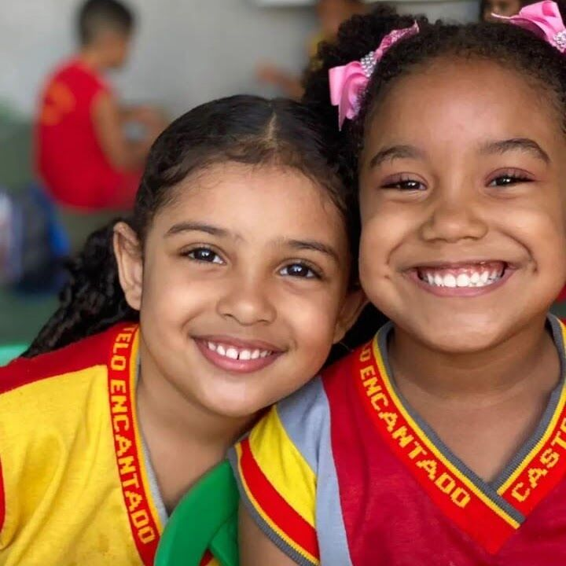
Um ambiente acolhedor e seguro, onde cada criança é valorizada em sua individualidade e incentivada a crescer com valores sólidos.
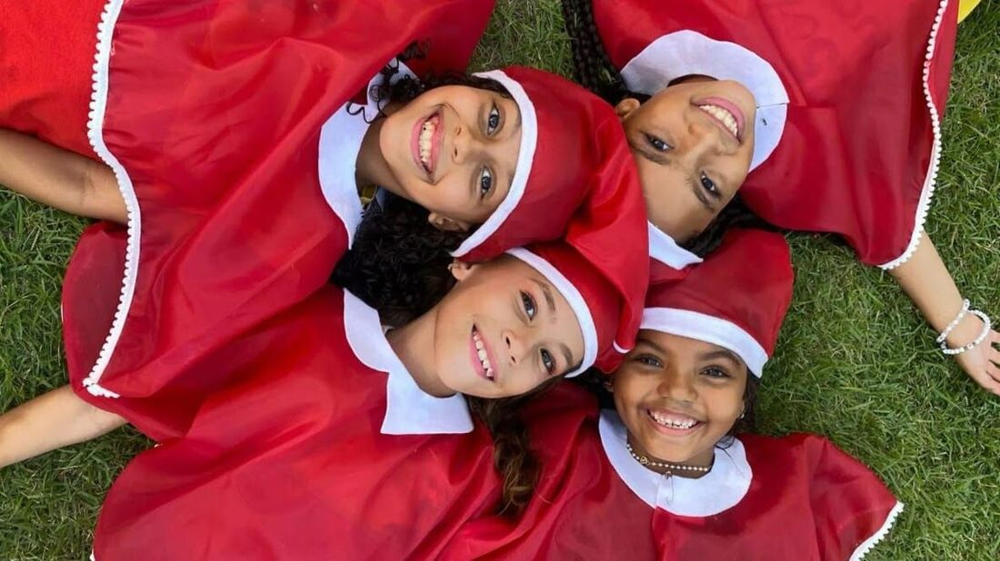
Fundamentada em valores cristãos, com abordagem prática e interativa que desperta a curiosidade e o prazer em aprender.
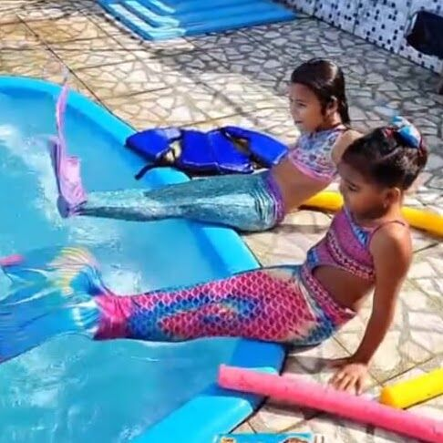
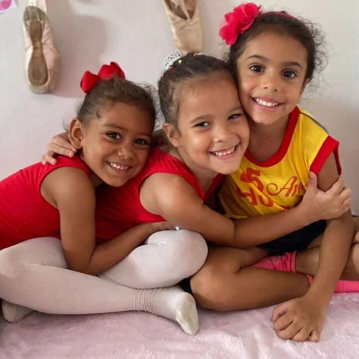
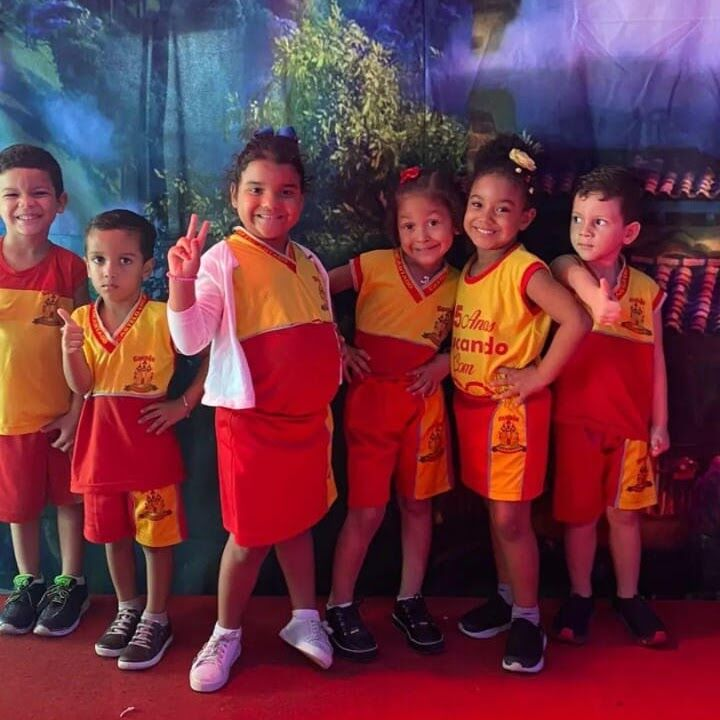
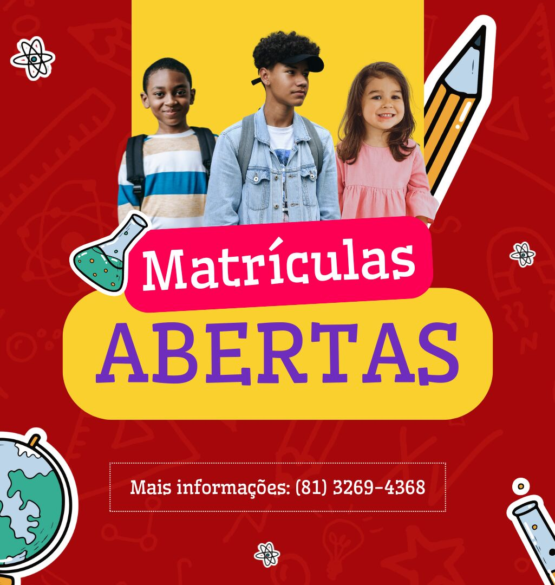
Condições especiais para matrículas e rematrículas antecipadas. Vagas limitadas por turma.
Responda duas perguntas e descubra em que turma a criança entra.
Seis perguntas sobre água, reciclagem e horta, inspiradas no Projeto Verde.
Garanta o futuro do seu filho em um ambiente acolhedor e estimulante, com educação baseada em valores, desenvolvimento integral e carinho.
Condições especiais para matrículas e rematrículas feitas até 19/12/2026. Vagas sujeitas à disponibilidade.
Novos alunos e rematriculados até [PRAZO] recebem um brinde exclusivo para começar o ano letivo preparados.
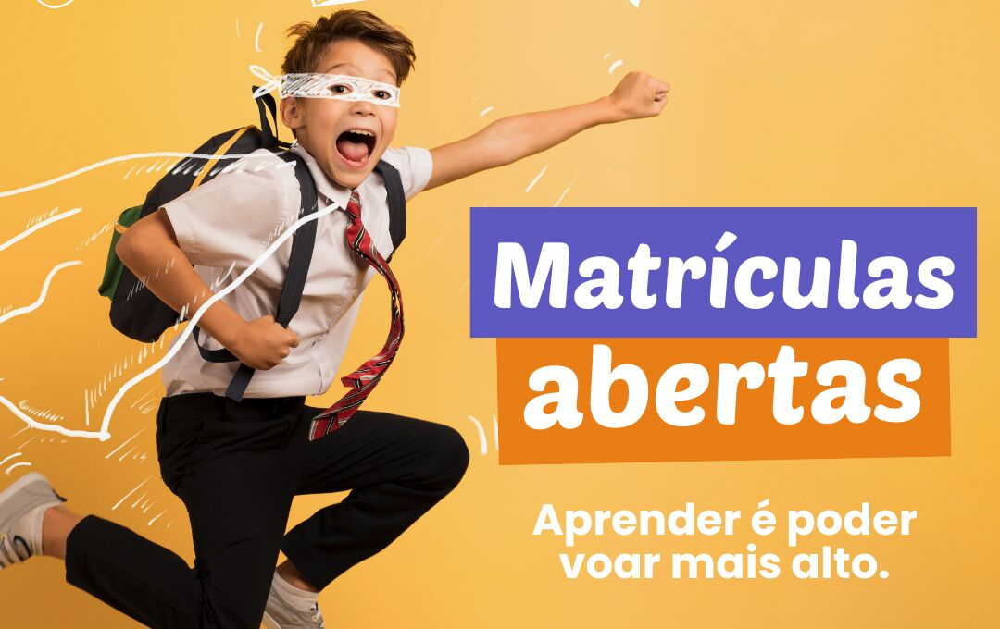
Pais de novos alunos e rematriculados até [PRAZO] participam de um sorteio exclusivo.
Pelo WhatsApp, telefone ou formulário de contato.
Conheça os espaços e a equipe pessoalmente.
[DOCUMENTOS E ETAPAS DA MATRÍCULA — a confirmar com a escola]
Fundada há 27 anos, a Escola Castelo Encantado tem como missão proporcionar uma educação integral, fundamentada em valores cristãos e no compromisso com o desenvolvimento ético e moral das crianças.
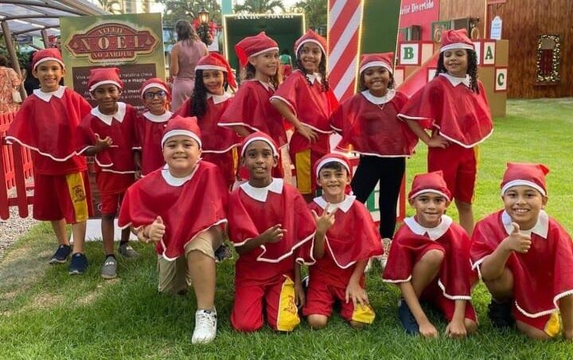
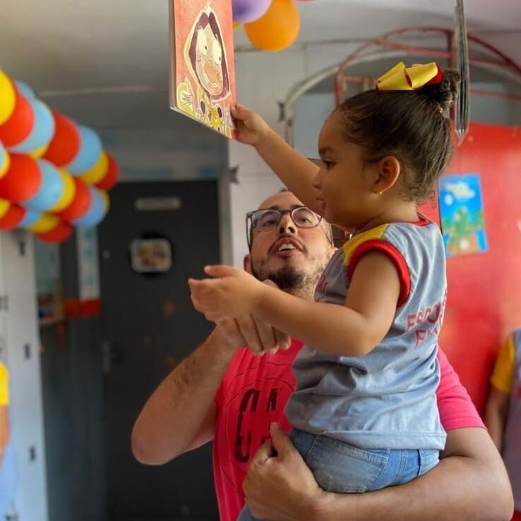
{{b.x}}
Mais que uma escola: uma extensão do lar, onde a formação de caráter, o amor ao próximo e o aprendizado andam de mãos dadas.
Metodologias ativas e projetos interdisciplinares que incentivam a participação, a criatividade e o pensamento crítico, respeitando o ritmo de cada aluno.
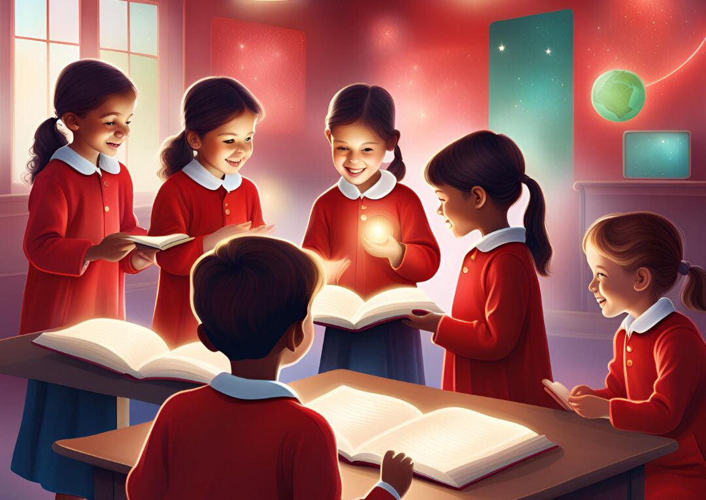
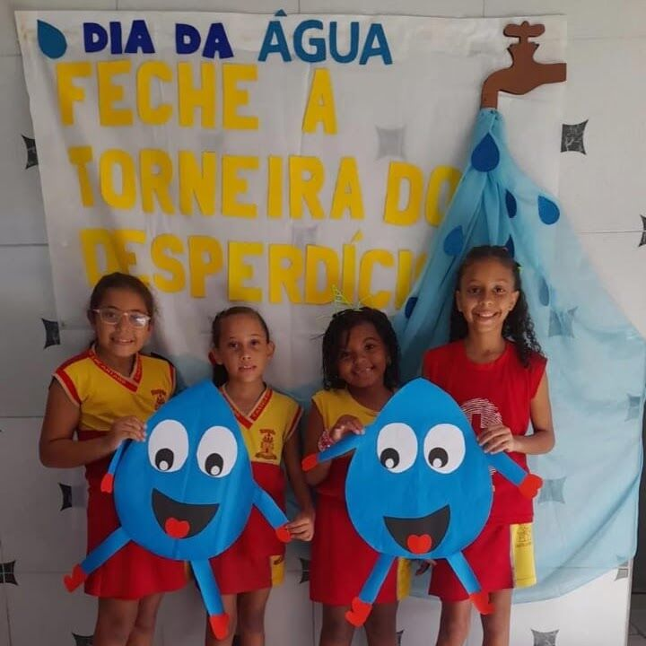
Jardinagem, oficinas de reciclagem, reaproveitamento de materiais e atividades ao ar livre para aprender, na prática, sobre preservação e responsabilidade social.
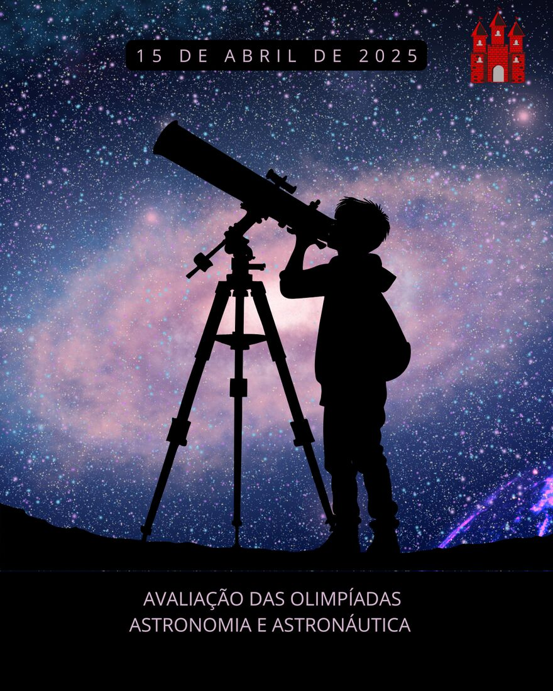
Nossos alunos participam da Olimpíada Brasileira de Astronomia e Astronáutica (OBA) e da Olimpíada Canguru de Matemática, estimulando o raciocínio lógico e a confiança diante de novos desafios.
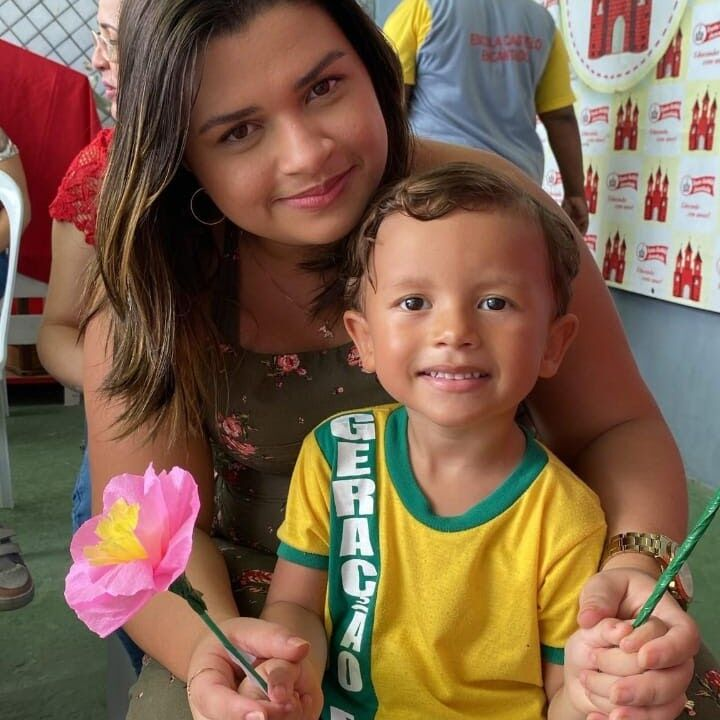
Reuniões periódicas, relatórios de desenvolvimento e a plataforma AgendaEdu, para acompanhar comunicados, atividades e a vida escolar em tempo real.
Ambientes pensados para o conforto, a segurança e o aprendizado, do maternalzinho ao Fundamental, mesmo nos dias mais quentes do Recife.
{{post.r}}
{{par}}
O cuidado com o meio ambiente começa com pequenas atitudes. Até 2027, pretendemos alcançar o selo de Escola Sustentável.
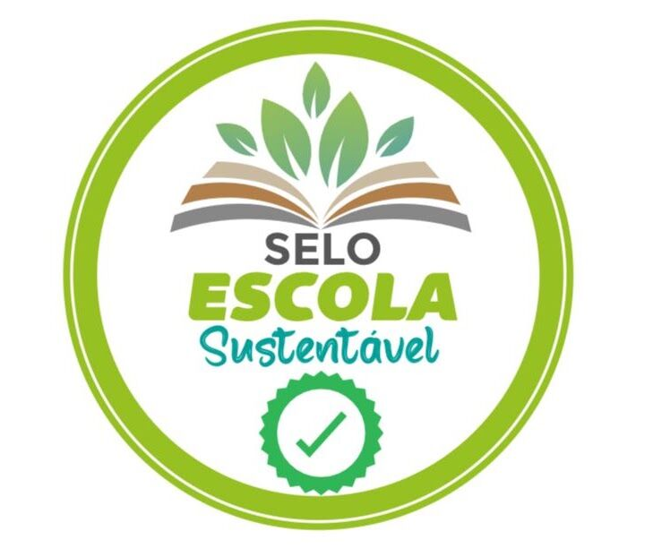
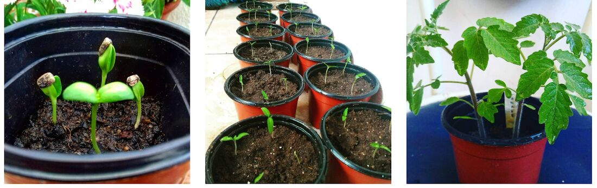
{{j.x}}
Seis perguntas para testar o que os pequenos sabem sobre cuidar da natureza.
Duas perguntas rápidas e você descobre a turma e o que a criança vai viver nela.
Você sabe cuidar da natureza? Responda e descubra se já é um guardião do Castelo Verde.
{{vWhy}}
Agende uma visita, tire suas dúvidas ou peça informações sobre matrículas. Respondemos o quanto antes.
Como a Escola Castelo Encantado cuida dos dados das famílias que visitam este site, de acordo com a Lei Geral de Proteção de Dados (Lei nº 13.709/2018).
Minuta para validação da escola. Última atualização: [DATA].
{{px}}
Usamos cookies para o site funcionar e, com a sua permissão, para entender como ele é usado e melhorar a sua experiência. Saiba mais na nossa .